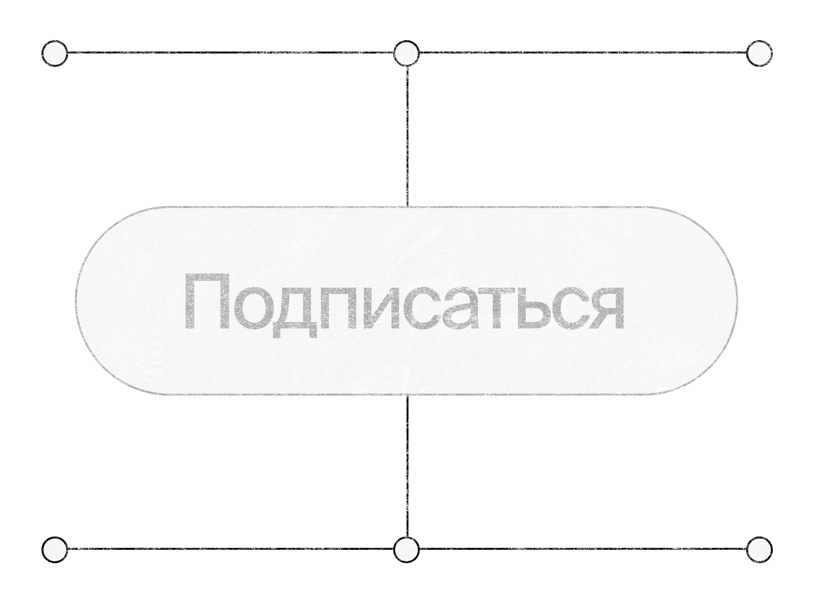
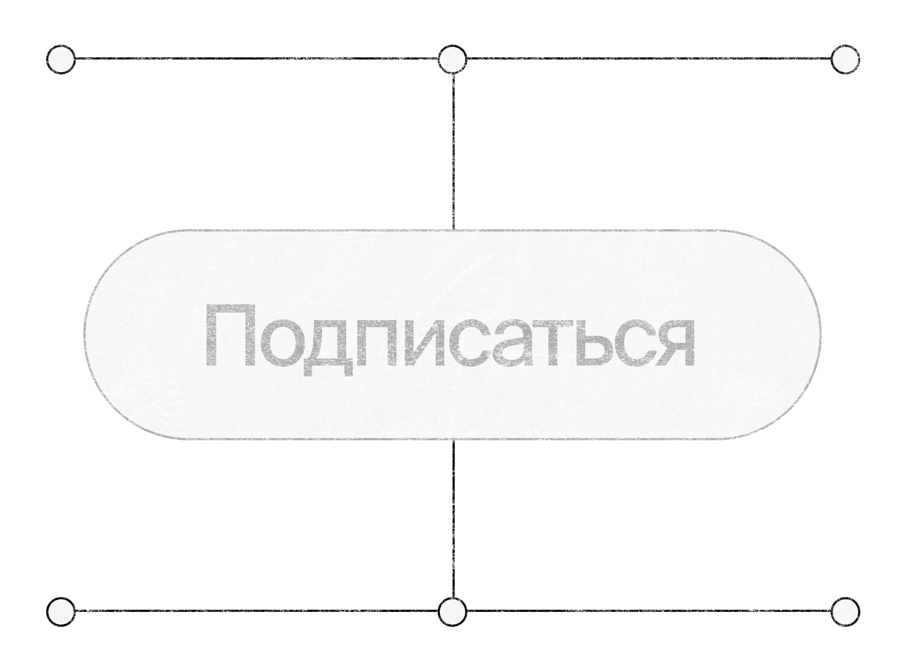

Кнопка — один из наиболее часто используемых компонентов интерфейса. Ее основной задачей является предоставить пользователю возможность совершить определенное действие, например: купить, отправить форму, сохранить или отменить изменения, перейти на следующий шаг и т. д. В некоторых случаях кнопка должна еще и побудить нас к действию.
Базовая анатомия
Так как контейнер определяет границы и форму кнопки, текст или иконка внутри нее должны создавать смысловой центр. Отступы слева и справа служат для того, чтобы обеспечить хорошую читаемость и визуальный баланс.
Анатомия с иконкой
Так как контейнер определяет границы и форму кнопки, текст или иконка внутри нее должны создавать смысловой центр. Отступы слева и справа служат для того, чтобы обеспечить хорошую читаемость и визуальный баланс.
Размеры и области касания
На самом деле, у кнопки нет четких правил для размеров, однако, стоит учитывать некоторые особенности. Пользователю может быть трудно нажать слишком маленькую кнопку, а слишком большая кнопка будет привлекать к себе излишнее внимание. При создании кнопки стоит соблюдать баланс и следить за тем, чтобы данный элемент имел достаточную область касания.
Кнопка, как и большинство других элементов интерфейса, должна реагировать на действия пользователя. В обычном состоянии она просто ждет взаимодействия. При наведении (на десктопных устройствах) немного меняется, как бы намекая на доступность действия. При нажатии кнопка тоже будет изменяться, но уже сильнее, чем в случае с наведением. Неактивная кнопка должна сообщать нам о своей недоступности.
Default
Кнопке в обычном состоянии необходимо быть заметной и считываться, как интерактивный элемент, а адекватная контрастность, относительно других элементов интерфейса, поможет нам ее выделить.
Hover
При наведении кнопка может немного поменять цвет, слегка увеличиться или добавить тень. Изменения должны быть заметны, но не чрезмерны.
 

Active
При нажатии важно заложить мгновенную обратную связь, ведь кнопка должна подтвердить или, наоборот, опровергнуть, что действие пользователя возымело свой результат.
Disabled
Неактивное состояние выглядит очевидным и не привлекает лишнего внимания. Обычно это достигается уменьшением контраста и насыщенности цветов.